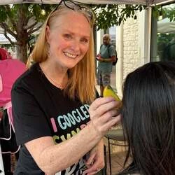
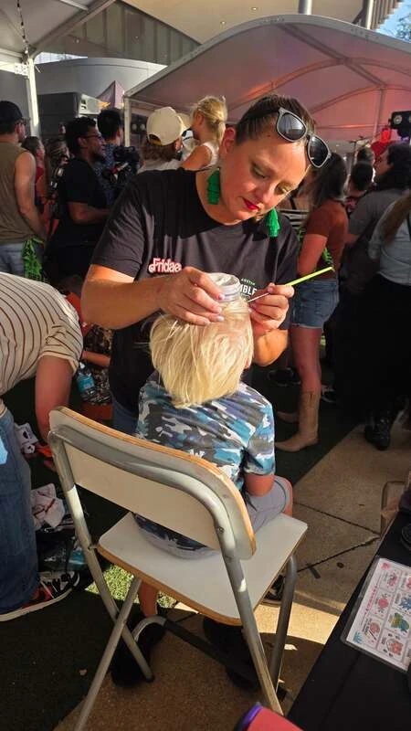

Lisa
Lisa has always loved being creative, but face painting became something much bigger than she ever expected. After 20 years of face painting, she still absolutely loves painting smiles on the faces of kids of all ages.
Her favorite moment is when a child looks in the mirror and their face lights up. Most of all, Lisa loves bringing fun, creativity, and a little bit of magic to every event and celebration.

Fridae
Fridae has been face painting for several years and loves being creative, meeting new people, and bringing fun and joy wherever she goes. Her talents include face painting, balloon twisting, airbrush art, glitter tattoos, and hair tinsel.
Her favorite part is seeing everyone having fun and knowing she helped create those memories. She continues learning and growing as an artist, while keeping her main goal simple: bringing joy to every event.